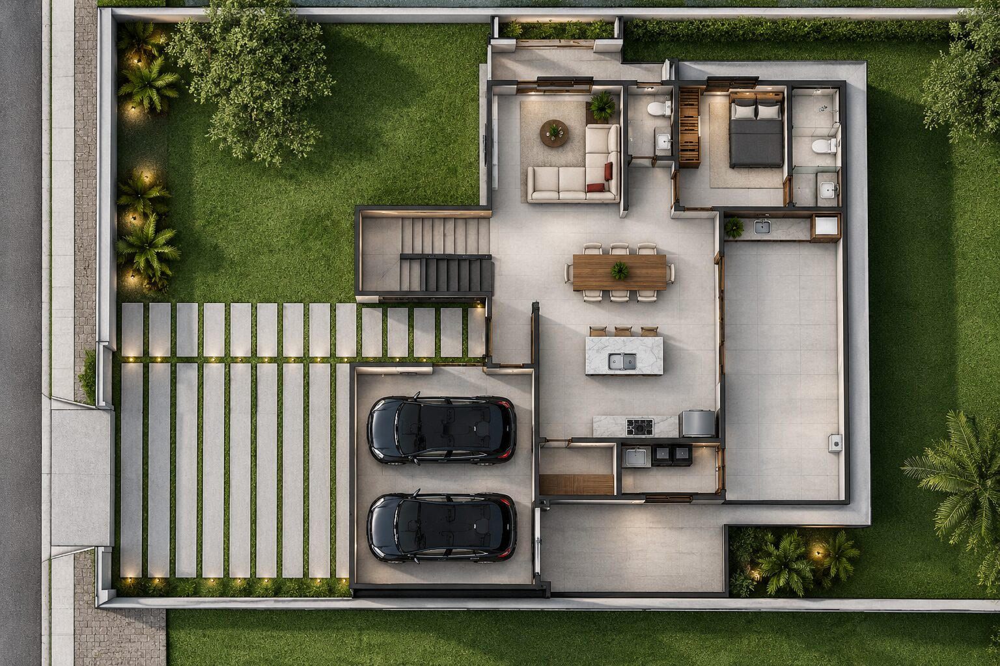

Nível +0,00
O andar de receber
A vida coletiva da casa acontece em um único gesto contínuo: da garagem coberta para a varanda, da varanda para a sala, da sala para a mesa e da mesa para a ilha da cozinha. Quem cozinha continua na conversa. Uma suíte no térreo garante que a casa funcione inteira sem subir um degrau.
- Garagem 2 vagas
- Varanda
- Estar
- Jantar
- Cozinha com ilha
- Área de serviço
- Suíte
- Lavabo